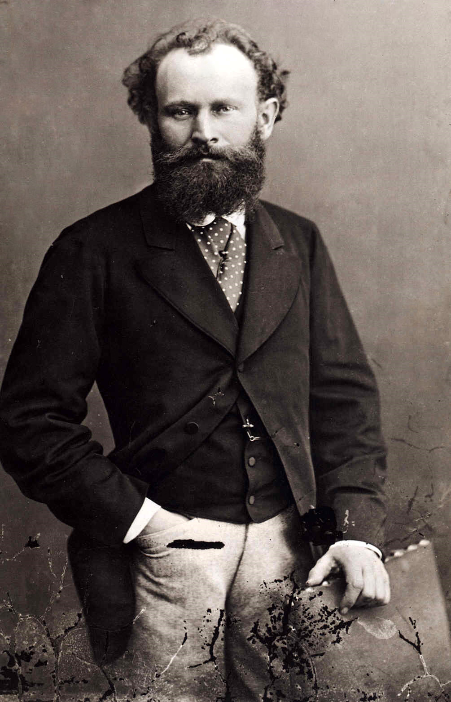
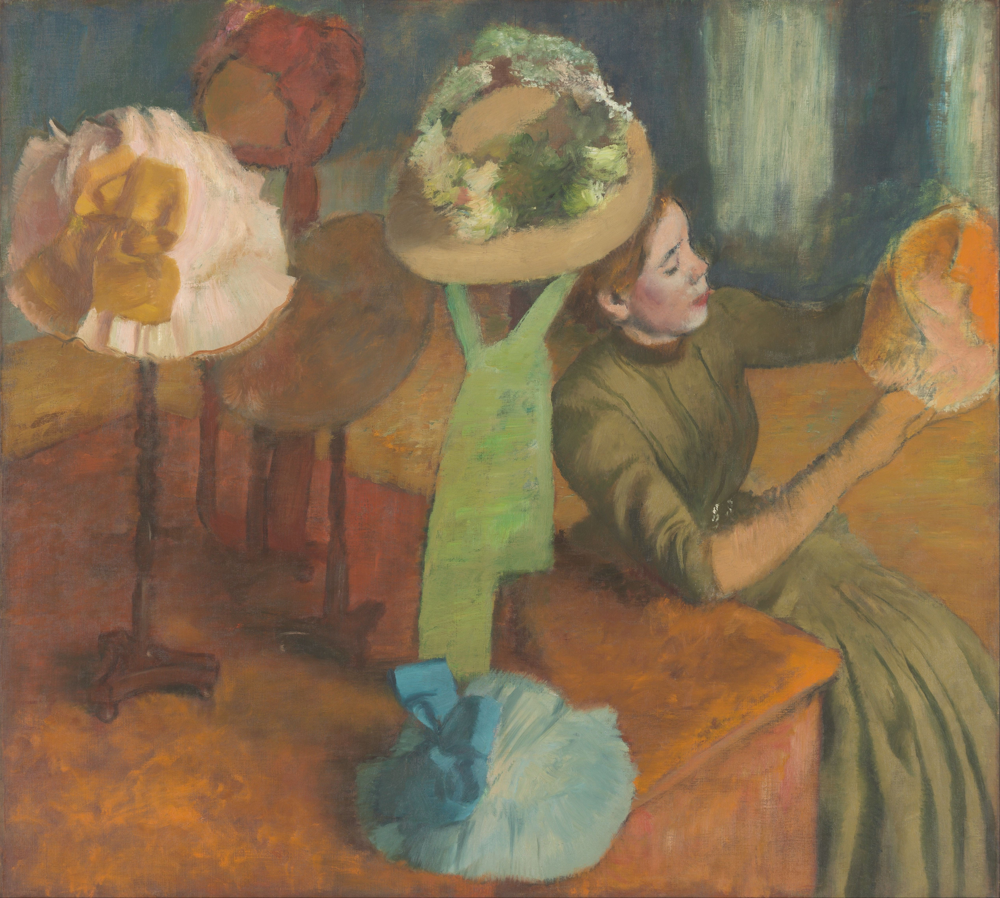
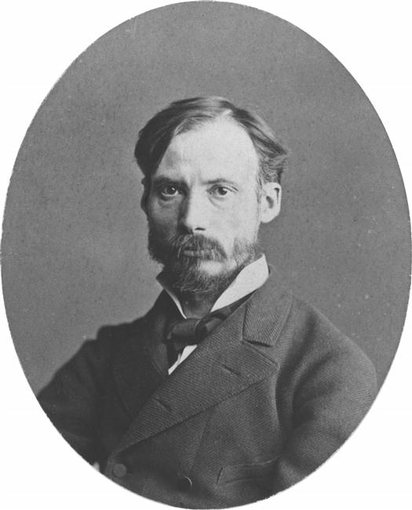
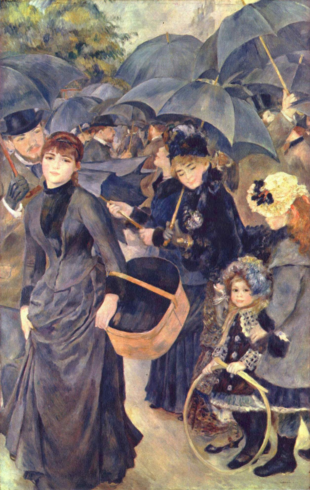
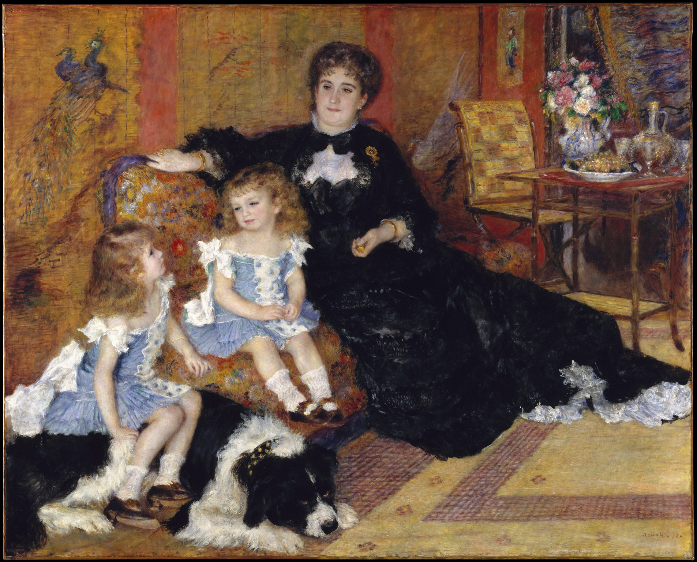
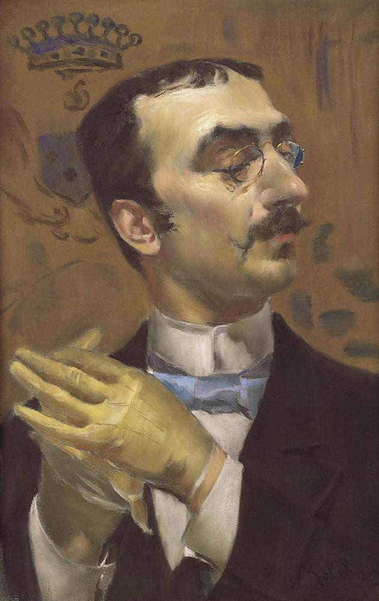
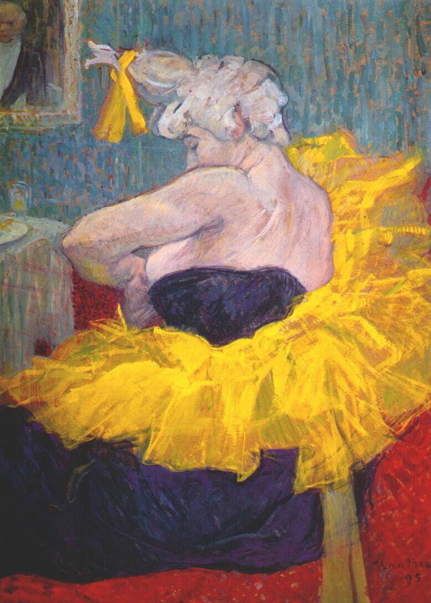
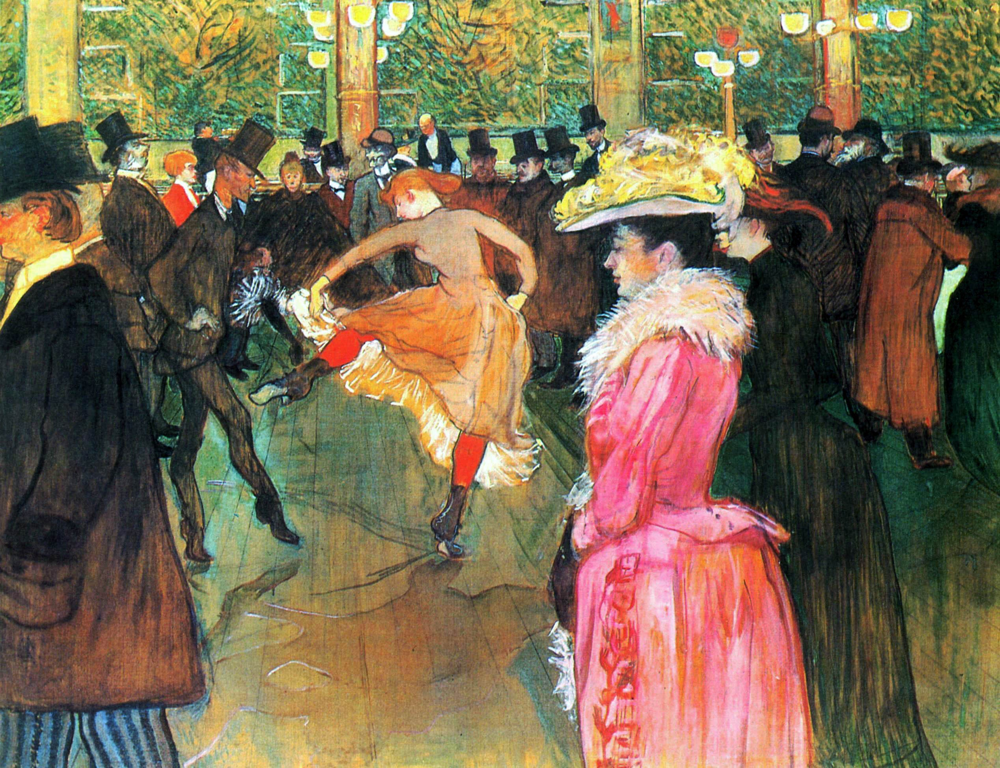

Capítulo 20
El impresionismo, arte de la nueva era
Édouard Manet es un artista de la nueva era, que dijo una palabra nueva en el arte. Es un hombre con sangre de Colón, que en busca del agua viva se sumergió en aquella época histórica en que en Venecia nació la pintura europea. La patria de la pintura europea es Venecia, porque los pintores venecianos fueron los primeros en dominar la técnica de la pintura al óleo1, el lenguaje del arte de caballete. Por primera vez la pintura de caballete aparece en forma de pintura veneciana del siglo XVI. Y precisamente Manet se sumergió en esos orígenes.

Recordemos a Tiziano y cómo trabajaba con la imprimación. Tiziano fue un pintor europeo moderno. Tiene un cuadro en el que una mujer está sentada y sostiene en brazos ante sí a un niño gordito. Si uno no supiera que este cuadro cuelga en un museo en la sala de Tiziano, al mirarlo podría decidir que lo pintó alguno de los impresionistas.
Manet pintaba con pequeñas pinceladas, simplemente minutísimas. En sus cuadros crea una atmósfera particularmente difusa, como esculpida de la más tierna nube. Recorrió todo el camino del arte de caballete, desde el comienzo de su formación, y absorbió en sí un enorme estrato futurológico. ¡Cuánto hay en él, cuántos mundos contiene! Y, como todo gran artista, cita muchísimo.
En el cuadro de Giorgione «Concierto campestre»2 vemos figuras femeninas desnudas y masculinas vestidas. Es una especie de picnic peculiar. Un grupo de personas está sentado en una colina y hace música: tienen instrumentos musicales en las manos. Miren cómo están pintadas las mujeres: como frutos. Hay que decir que los pintores florentinos pintaban a las mujeres largas, delgadas, histéricas y tensas, aunque las florentinas siempre fueron gorditas. Y en el cuadro de Giorgione las mujeres se parecen a las venus tardoantiguas.

Los venecianos adoraban la belleza femenina, pero en su pintura falta cierta actividad femenina en la vida. Las mujeres están presentes más bien para ser contempladas. Y «Concierto campestre» puede llamarse pastoral, y no simplemente pastoral, sino pastoral ideal: en ella hay armonía de todo con todo, armonía del mundo con el hombre, disuelto en esa naturaleza. Miren esas líneas de las manos, la jarra transparente… Y el cuadro se llama «Concierto» no porque esas personas interpreten música, sino porque hay en él lo que hay en un concierto: consonancia de todos los instrumentos y objetos. El cuadro tiene su propia voz, y todo junto crea una poderosa consonancia y unidad. Y es el punto ideal, porque es ilusorio. Los venecianos estaban simplemente obsesionados con la música: tenían quintetos domésticos, cuartetos, y no olvidemos que crearon la ópera mundial3. Fueron los creadores del sinfonismo moderno. Crearon la pintura y amaban mucho la música. No es Tiziano, a quien simplemente golpeaban y sacudían las corrientes vitales, como puede verse en el retrato de Carlos V.

Con el cuadro de Giorgione resuena el cuadro de Manet «Desayuno sobre la hierba». Aquí hay un género completamente asombroso y nuevo: naturaleza, laxitud estival, árboles, silencio, nada hay en el bosque, solo el picnic, el cuarteto: dos hombres vestidos y dos mujeres desnudas4. Y este cuadro, como «Olympia», produjo un efecto explosivo. Comenzó la discusión, tanto en torno al cuadro como en torno a la personalidad del artista. Todos comprendían perfectamente hasta qué punto todo aquello difería de aquello a lo que el espectador estaba acostumbrado.

¿En qué consiste esa diferencia? Miremos con más atención «Desayuno sobre la hierba». En primer lugar, esta obra está hecha de un modo muy interesante e inusual desde el punto de vista de la composición. En segundo lugar, es una obra muy clásica. Y en tercer lugar, mostró por primera vez esa vida que viven las personas, y en el cuadro todos ellos son reconocibles. En esencia es un retrato, y una de las mujeres era bien conocida por todos: es Victorine Meurent. En el cuadro entró la vida misma, sobre la que nadie pensaba siquiera que pudiera representarse así en el arte.


Édouard Manet es una figura asombrosa. Fue el primero en comenzar a describir la vida con un lenguaje nuevo. Manet no solo está vinculado a las tradiciones de la cultura clásica, sino que es un artista que abre puertas para la comprensión de otra tarea del arte. Es un pintor impresionista y en este estilo escribió muchísimos cuadros. Y al mismo tiempo Manet es un pintor clásico de la tradición clásica, el último artista del siglo XIX que pintó cuadros con un contenido que describe la vida. Sus cuadros tienen una cierta composición dramatúrgica, expresan un contenido argumental dramatúrgico. Muestra a un hombre completamente contemporáneo a él de aquel tiempo. Y la vida más emocionante ocurre en el mundo no aristocrático ni proletario, sino allí de donde viene el héroe de «Desayuno sobre la hierba», de donde vienen todos los héroes de Manet. Es la nueva burguesía, fastuosa, ya con nuevas costumbres, con un nuevo estilo. Es la época del Segundo Imperio en Francia.
Miren cómo va vestido el héroe del cuadro «Desayuno en el taller»: qué pantalones blancos, camisa, corbata: todo un petimetre de la revista de moda «Snob»5, producto de aquel tiempo. Presten atención a la mesa. El héroe está ante una mesa muy bien puesta, al lado hay una sirvienta. Es la época del florecimiento de la vida de restaurante en Francia, y el bodegón está pintado como lo pintaban los pequeños holandeses. Este cuadro está pintado por Édouard Manet en el espíritu no del academicismo convencional, sino de la naturalidad clásica de los maestros, pero representa la nueva vida y los nuevos héroes. Y Manet es el único que trabaja en esa manera. No hay otros pintores que combinaran así la novedad y la tradición clásica. Y precisamente a él le pertenece un descubrimiento social muy interesante: nadie más describió para nosotros de modo tan pleno la vida de su medio.

Antes de pasar a otros cuadros, miremos también su «Balcón». En el balcón están un hombre (el pintor Antoine Guillemet) y dos mujeres: Berthe Morisot, talentosa pintora y pariente de Manet6, y la violinista Fanny Claus. En París, en el museo Marmottan-Monet, se conservan muchas obras de Berthe Morisot. Ella pintó muchísimo, y Manet la pintó mucho a ella. Si se mira con atención el «Balcón» de Manet, puede notarse que recuerda al cuadro de Goya «Las majas en el balcón»: allí también hay un balcón, dos mujeres y la figura de un hombre de pie.


En los cuadros de Manet se refleja su burguesidad característica, la elegancia de la vida, que él valora mucho. Como ningún otro pintor de su tiempo valora la elegancia, la feminidad, la erótica sensual: esos rizos, sombreros, vestidos, admirablemente pintados por el pincel del maestro. Es un gran artista por cuyo gusto, por cuya mirada, por cuyo experimento, por cuya avidez artística no pasó nada.
Picasso copió muchas veces a lo largo de su vida dos cuadros: «Desayuno sobre la hierba» de Manet y «Las Meninas» de Velázquez. Tiene simplemente una cantidad infinita de pruebas de estos dos cuadros. En una de las exposiciones se presentaron distintas variaciones de «Desayuno sobre la hierba». Picasso no puede saciarse con ellas y muestra todas las posibilidades ocultas, por nadie advertidas, de estas composiciones. ¿A quién más se le habría ocurrido comparar estos dos cuadros? Pero Picasso afirmaba que en ellos están depositadas enormes posibilidades ocultas. Desde el punto de vista de Picasso, estas obras son un poderoso nudo, una fuente para la reflexión artística.


Manet vivió una vida corta: solo cincuenta y cuatro años7, y murió de una enfermedad antipática y nada romántica. Pero en su vida hizo mucho; fue un nudo que ata en un solo camino los caminos del mundo. Es el punto de partida de una nueva era y de una comprensión completamente distinta del arte.
Todos conocen el café «La Rotonde»8, el lugar donde se reunían los pintores impresionistas. Existen muchísimas películas, se han escrito muchos libros sobre «La Rotonde». Y nadie sabe que el primer lugar donde se encontraron los futuros impresionistas fue el café «Guerbois» en Batignolles. Precisamente allí Manet comenzó a reunir a todos los pintores. Y la primera escuela parisina que él encabezó se llama «Escuela de Batignolles». Precisamente en ese café se sentaban todos nuestros héroes: Claude Monet, Édouard Manet, Renoir, Degas, Sisley, Pissarro. ¿Qué hacían allí, además de pasear con muchachas? Hablaban de arte.

Hay otro impresionista ideal: Claude Monet. Es el trovador de Édouard Manet, el gran ejecutor que pasó por su escuela.9 Y la «Escuela de Batignolles» es precisamente la nueva escuela parisina. Manet tenía además otra cualidad muy extraña. Era un ilustrador de la vida. Sus cuadros son auténticas ilustraciones. El joven de pantalones blancos es una ilustración, el balcón es una ilustración… Es la vida misma. Manet saca a los cuadros todas las imágenes de la vida que lo rodean. Es un narrador. Los impresionistas son en lo fundamental mostradores, y él es narrador. Y sus relatos pictóricos están estilística y psicológicamente más cerca de aquel maestro que puede ser su análogo en la literatura: Guy de Maupassant. Ambas figuras son, por supuesto, absolutamente geniales. Hay en ellas plenitud de inclusión en ese mundo en el que viven y que quieren describir sensualmente. No aspiran a la armonía, aman el episodio. En la novela de Guy de Maupassant «Bel Ami» se ve que es un maestro del episodio, como Chéjov. No es Balzac, que teje encaje con elementos. Lo más probable es que tanto Maupassant como Manet fueran personas sensibles, privadas de piel. Así palpaban el tiempo.
En este sentido, uno de los cuadros únicos de Édouard Manet es simplemente una ilustración literaria directa: su cuadro «Nana». Por un lado, es pintura, y usted lo mira como pintura y lo admira como pintura. Y por otro lado, es la más auténtica ilustración de la novela de Émile Zola «Nana»10. Un monstruo perfectísimo, pero al mismo tiempo una mujer tan hermosa… Hermosa en todos los parámetros. Y en este cuadro está sentada su siguiente víctima: un hombre de traje de noche, y ella en medias, encantadora, sobre el fondo de un bordado chino. En el bordado chino conviene detenerse, porque a finales del siglo XVIII y en el XIX Europa vive el boom de todo lo japonés y lo chino. Toda Europa estaba inundada de todo lo chino: biombos, objetos lacados de madera. En Petersburgo se construyó la casita china. A finales del siglo XIX esta afición se intensificó, pero ahora no es solo vajilla decorativa u objetos de interior, sino también la especificidad de la pintura. El arte chino ejerció sobre ella una enorme influencia.

Miremos el retrato de Suzanne Manet (nacida Leenhoff), pintado en una manera puramente impresionista. Suzanne Manet es una pianista notable, cuyo juego disfrutaba el propio Franz Liszt.11 Enseñaba música, y entre sus alumnos estaban los hermanos de Édouard Manet: Eugène y Gustave. Édouard Manet era amigo suyo, frecuentaba su salón, fue padrino de su hijo, habido con otro hombre. Mantuvieron correspondencia y luego se casaron.

No hay ningún punto de intersección entre la moda de esta época y el impresionismo. No puede decirse que estos atuendos los creara el impresionismo. Los impresionistas pintaban el mundo a su alrededor y, por supuesto, representaban a las mujeres con los atuendos de aquel tiempo, y nada más. La moda de aquella época fue creada por la reina de Francia y su entorno.12 Alguien incluso llamó a aquel fastuoso florecimiento con la palabra «capitalismo». Es una moda que exigía gastar dinero; los atuendos costaban muy caro. Como decía el héroe de Vysotski: «¡Para coserte hace falta un arshin! ¿Dónde está el dinero, Zin?» Es la época del florecimiento de la industria del lujo. No se puede equiparar esta moda y los impresionistas; resulta exactamente como en el proverbio: «En la huerta el saúco, y en Kiev el tío». No tienen ninguna relación entre sí. Pero ¡qué vestidos eran! Lo más interesante es que esos vestidos están descritos en el propio Maupassant. Esto era antes de la aparición de los sujetadores, en la época de los corsés. Los corsés se ajustan por detrás, las faldas se balancean, y los hombres se inquietan…
¡Y qué joyas, qué collares tan asombrosos llevaban! Era la época de la consolidación de París como primera capital, la época de la construcción de París tal como es hoy.
El siglo de la época de los banquetes: así puede llamarse este período. Continuó hasta la Comuna de París. La Comuna apretó un poco la moda, pero no pudo doblegar del todo ese poderío. Era el tiempo de las revistas y del gran dinero invertido en la industria joyera, los atuendos, la legislación de la moda. Pero los pintores impresionistas eran solo biógrafos de la vida.
Miremos el cuadro de Renoir «El palco». Un palco lujoso, la mujer con un vestido asombroso, perlas completamente fantásticas, flores arrugadas, peinado, un hombre con gemelos. ¡Todo esto es asombrosamente hermoso! Este cuadro es una utopía que se convirtió en energía positiva. El impresionismo es un arte únicamente positivo, alejado de la problemática social. Ningún choque de clases. Solo hay mar y hay juego de nubes. Hay mujeres hermosas, hay sus lujosos atuendos, hay el aire que respiran, hay este mundo hermoso y el bien. Todo el impresionismo es absolutamente positivo.

El conde Toulouse-Lautrec13, que podía haberse casado con la mujer más hermosa y rica, prefería a las prostitutas. Le gustaba vivir de otro modo. No tenía complejos. Psicológicamente lo valoramos mal. Fue el último cruzado. Nos da vergüenza por él, y él se divertía.
El impresionismo es absolutamente positivo: usted llega al museo y se disuelve en la positividad de los impresionistas, todos juntos y cada uno por separado. No hay otra corriente en la que haya tanto amor a la vida y tanto goce sensual de ella. ¿Qué es el amor? Nace cada día. No tiene edad y nunca más se repite. El impresionismo es disolverse en la vida. Por supuesto, como ejemplos clásicos del impresionismo se suele nombrar a dos pintores: Claude Monet y Auguste Renoir. Sus cuadros, ¿son hermosos o no? Hay una palabra, antiartística, prohibida por el arte: la palabra «gusta». La palabra «gusta» está categóricamente prohibida en el arte. Puede gustar una muchacha, un aperitivo para el vodka. Y el arte es una cuestión de preparación: hasta qué punto usted está preparado para un determinado nivel, o hasta qué punto el arte está preparado para su percepción. El impresionismo creó al espectador de la pintura. Hizo una obra grande, grandiosa, civilizatoria: creó al verdadero apreciador de la pintura entre un círculo bastante amplio de espectadores. Así Stanislavski con Nemiróvich-Dánchenko crearon al espectador teatral: hicieron el teatro, como el literato que creó al lector profesional. Y nosotros ya no existimos: ni lectores ni espectadores. Solo a veces, como en sueños, recordamos que quizá lo seamos. Y el impresionismo es para nosotros una cosa grande, porque satura nuestra vida.
¿Qué es en general la pintura impresionista? En Rusia el verdadero impresionismo apareció con un pequeño retraso, y es el pintor Valentín Serov. Serov es una figura muy interesante. Por la manera de ejecutar recuerda a Manet. ¿Y de dónde le vino esto a Serov? Recordemos cómo pinta al pintor Korovin14, jefe del impresionismo ruso, cómo pinta su mano… ¿Acaso es peor que Renoir? No, no es peor, es verdadera pintura impresionista. Y los rusos y los franceses siempre amaron a los alemanes. Rusia siempre adoró solo a los alemanes. Esto se ve en la correspondencia de los pintores. Vrúbel, adelantándose al cubismo y a Cézanne, rezaba precisamente a los alemanes.


Las obras de los impresionistas no solo son hermosas. Usted ni siquiera se da cuenta de hasta qué punto la contemplación de ellas es psicológicamente curativa y saludable. Pero hay además otro momento: es lo que el impresionismo destruye. Solo Édouard Manet puede de algún modo combinar lo uno y lo otro. Pero en general el impresionismo destruye el cuadro en partes y crea la condición de estudio.
Volvamos a Claude Monet. Miren su cuadro «Paseo. Camille Monet con su hijo Jean (Mujer con sombrilla)». Por el tamaño es un cuadro bastante grande, pero por grande que sea, se percibe igualmente como un estudio. Cuando decimos «cuadro», sobreentendemos algún momento de dramaturgia: allí algo debe ocurrir, debe representarse algún suceso. Y un estudio es un estudio. Y el cuadro de los impresionistas no presupone la representación de ningún otro acontecimiento que el acontecimiento lumínico. Precisamente con los cuadros de Claude Monet aparece en la pintura un nuevo héroe que ocupa con su persona todo el espacio. Ese héroe es la luz solar. El impresionismo es el mundo bajo la luz solar, incluso si llueve, incluso si en el cuadro está representada una estación de ferrocarril de la que sale vapor espeso. El impresionismo es la representación del mundo de la luz. No es la representación del mundo de los acontecimientos históricos, del mundo de los dramas psicológicos, sino precisamente la representación de la luz solar y de todo aquello que casualmente cae en el objetivo del artista. «Mujer con sombrilla» es un cuadro grande que podemos llamar estudio. En él está representada madame Monet. Pero no nos importa su sombrilla o su vestido, solo nos importa la luz solar, que crea un efecto único. ¿Madame Monet camina sobre la tierra o no? El mundo pierde masa, ocurre un milagro cósmico. Es completamente asombroso. En la pintura de los impresionistas el mundo queda físicamente privado de textura y de peso.


En 1874, en el taller del fotógrafo Nadar15, en el bulevar de los Capuchinos, se expuso un cuadro de Claude Monet titulado «Impresión. Sol naciente». Quizá no pueda encontrarse un título más exacto: el pintor representó la impresión del amanecer. Captó esa instantaneidad, la no duración del estado. ¡Detente, instante, eres hermoso! ¿Y cómo puede captarse un instante? Por el procedimiento del estudio.

En la obra de Claude Monet desde el principio se determinan los rasgos fundamentales de su visión. Cuando usted mira sus cuadros, parece que se puede mover el marco en distintas direcciones. ¿Qué puede caer en su objetivo? Lo que sea. Y así con cualquiera de sus cuadros. Y lo más importante: se pueden poner patas arriba, y tampoco cambiará nada, solo se volverá aún más interesante. Esto ocurre porque Monet desde el principio pinta la auténtica realidad pictórica. Fija su impresión pictórica. En lo fundamental pinta paisajes, y desde los primeros trabajos en sus cuadros el agua está representada de un modo particular: como reflejo del cielo, como reverberación.
Puesto que Claude Monet es el impresionista ideal, no tiene nada más que esa sensación de la luz a través de la absorción instantánea. Es una metafísica profunda. Monet es un pintor asombroso, y usted junto con él cae en un estado asombroso. Con su llegada se produjo el cambio de un arte por otro, de un lenguaje por otro. Puede decirse así: el mundo ya no se describe de modo episódico. Monet lo describe solo como impresión, lo describe a través de héroes aislados. En él, de cuadro en cuadro, cambia no solo la paleta, sino también la pincelada. Con Monet ocurren cosas asombrosas: como pintor realiza una evolución increíble. Miremos, por ejemplo, su serie «La catedral de Ruan».16 Sus cuadros son parte del aire. Y no importa qué pinte: a su mujer con sombrilla, donde la única cosa tangible es solo la sombrilla, o la estación de Saint-Lazare, donde todo está penetrado por el estado del efecto del humo que sale de todas partes, y todo reverbera a través del techo de vidrio de la estación… Y la catedral, que pinta una vez, luego otra, luego una quinta, en distintas horas del día. Cada vez tiene un estado pictórico absolutamente distinto.


Si usted somete los cuadros de Claude Monet a ampliación, verá una cosa muy interesante. En sus obras de los años 1870 el mundo, tras perder materialidad y peso, adquiere un estado asombrosamente pacífico y muy apaciblemente feliz. El verde del jardín, el mantel, una mujer con vestido blanco, todo se mueve, todo parece un sueño, y al mismo tiempo el cuadro no tiene límites. Es un fragmento del mundo. El espacio tal como era en David o en Rembrandt desaparece. Es el mundo en una impresión homogénea, pictórico-espiritual. Y debido a la indefinición de los límites, a usted le resulta muy fácil encontrarse dentro de él. ¿Por qué, cuando los hermanos Lumière mostraron «La llegada del tren», los espectadores se asustaron? Porque parecía que no había límites entre ellos y el tren, que el tren iba a entrar directamente en los espectadores. En los verdaderos impresionistas, como Monet o Renoir, tampoco hay esos límites, esos marcos. Al espectador le resulta muy fácil encontrarse dentro de su espacio. Y eso hace feliz al hombre.
Monet en su arte fue un genio absoluto. Creó el mundo por completo y de nuevo, creó el impresionismo como fenómeno, nos involucró en ese mundo, haciéndolo parte de nosotros. A todos los impresionistas puede comparárseles con aquel flautista del cuento que arrastró tras de sí a los niños con el juego de su flauta. Pero como Monet no hay. Es muy consecuente. Y en él, por esa entrada en el cuento de la pintura, surge un efecto extraño: el espectador puede quedarse muy largo tiempo ante sus cuadros. Todos los impresionistas son pintores ante cuyos cuadros uno quiere estar de pie. Pero ante Claude Monet simplemente se le ponen pesadas las piernas, y usted, como la heroína del cuento «Alicia en el País de las Maravillas», se encuentra dentro de ese mundo asombrosamente cálido. Póngalo patas arriba: ¿y qué resulta? Verá que es un reflejo. ¡Ese es el truco!
En la primera mitad del siglo XIX ocurrió un caso así. Delacroix, dueño de las mentes (y todos ellos estaban entonces socialmente cargados), pintó el cuadro «La matanza de Quíos». Como todos eran gente avanzada, todos simpatizaban con los griegos que luchaban contra los turcos. Y Delacroix pinta cómo los turcos exterminan a los griegos. La sociedad debe responder a tales acontecimientos, y respondió. Llegó a ver a Delacroix el poeta y crítico Baudelaire17 y le dijo: «¡Genial! Sabes, solo que aquí hay algo que no está del todo bien. ¿Has visto las obras del pintor inglés Constable? Es verdad, ¡qué hermoso verde tiene! Ve, míralo otra vez y pinta el verde». Y Delacroix lo hizo así, porque Baudelaire era para aquellos pintores lo mismo que Stásov para los nuestros. Nuestros pintores pintaban lo que Stásov ordenaba pintar. Por ejemplo, los cuadros de Repin están pintados en colaboración con Stásov: Stásov hablaba, y Repin realizaba. Del mismo modo miraban a Baudelaire en Francia. Y Delacroix repintó el cuadro. Baudelaire lo miró y dijo: «¿Sabes qué? Ponlo patas arriba. Cuando el cuadro está patas arriba, debe entenderse exactamente igual que en posición normal».

Y «Sol naciente» de Monet puede ponerse patas arriba. Entonces lo que veremos parecerá un reflejo. En esencia, ¿qué más da cómo mirarlo?
En los cuadros de Claude Monet nunca se repite la pincelada. Siempre son distintas. El caso es que esa pincelada es la pintura. ¿Y qué representa? La impresión. Monet cambió nuestra relación con la pintura, con el estudio, con la pincelada, con la paleta. Nos mostró qué es el objeto de la pintura. Resulta que el objeto de la pintura puede ser una nube corriente y una flor. Monet cambió nuestra representación del objeto de la pintura y de su límite. A través del lenguaje pictórico nos enseñó a mirar la pintura. Nos propuso mirar la pintura como objeto de arte, y nosotros estábamos acostumbrados a percibirla como representación de algo. Y precisamente Claude Monet nos mostró que la pintura no tiene por qué representar necesariamente algo.
Monet es un genio. ¿Quién es un hombre genial? Es un hombre que ha creado un mundo que no existía antes de él y que después de él ya no existirá. Ese mundo dejará tras de sí una estela muy grande, pero el fenómeno mismo es único y nunca más se repetirá.
El impresionismo es la mayor revolución no solo en el ámbito de la pintura, sino también en el ámbito de la conciencia. Es una representación completamente nueva del mundo: de qué es la pintura, de qué hace con nosotros, de cómo cambia nuestro punto de vista, de cómo empezamos a ver.
Hasta hoy a veces nos representamos Europa precisamente por los cuadros de los impresionistas: son para nosotros más que los libros y el cine, dan una representación integral de cómo vivía la gente, de cómo eran estas ciudades y países. Incluso puede llamárseles realistas, porque realmente pintaban del natural y fueron los primeros en representar el mundo real a su alrededor tal como se iba volviendo. Señalaban todo lo nuevo que aparecía en la ciudad y señalaban cómo había cambiado su modo de vida.
Claude Monet fue el autor de un nuevo punto de vista sobre qué es el arte: es la pintura de la vida viva. Y Monet creaba divinas sinfonías de imágenes del mundo y lo veía tal como es.
Cosa completamente distinta es Edgar Degas. Degas siente el mundo de un modo muy complejo y pinta igual de complejo. Sus composiciones son complejas: la dinámica del movimiento de la multitud, los planos generales, las junturas de montaje, cómo cae la luz. Al mismo tiempo Degas es un pintor extraordinariamente sensual. Y esas sensaciones son muy importantes para él. Puede decirse incluso que son eróticas. Es su propia percepción suprarreal, receptora.

Esto se ve por cómo pinta «Café-concierto “Ambassador”»: faroles que arrojan luz sobre la belleza fría y transfiguran el mundo. Las luces están dispuestas en el fondo en una sola fila y dan profundidad al cuadro. En el café hay algunas personas sentadas: alguien escucha a la cantante, alguien charla. Todo el espacio está lleno y colmado de vida. Es el mundo que ha recibido una nueva iluminación: la multitud que va a pasear, la tarde, los faroles encendidos, alguien vestido con cierta vulgaridad, alguien sentado con la boca abierta.

Precisamente los impresionistas provocaron la conciencia cinematográfica: una percepción completamente asombrosa de nuestro mundo, como si fuera un montaje. Sobre esto se ha escrito mucho, pero una verdadera investigación de lo que ocurrió no existe hasta hoy. Hasta hoy no hay aquel punto desde el cual se hubiera valorado todo el increíble período del impresionismo.
Hubo un pintor, Caravaggio, que trajo al mundo de la pintura el claroscuro18 e influyó muy fuertemente en el arte, pero tampoco él influyó en él como los impresionistas. Los impresionistas influyeron en nuestra percepción, en nuestras sensaciones a nivel inconsciente. Apareció un nuevo lenguaje que vino junto con este grupo de pintores, y así se formó un nuevo estilo. Aquel tiempo fue el tiempo de la creación no solo de un lenguaje, no solo de una visión, sino de todo un estilo, que con el tiempo se transformó él mismo y transformó nuestra percepción, nuestra interacción con el arte y el mundo. Los impresionistas influían en el arte, este influía en nosotros, y nosotros, a su vez, creábamos un estilo de vida. Es un proceso complejísimo. Y esto no está descrito ni investigado en ninguna parte. Todo esto parece haber quedado suspendido en el aire.
Degas tiene además otra cualidad. Miren cómo pintaba las manos: como vaciados de la Antigüedad, una armonía extraordinaria. Es un pintor muy armónico, cariñoso, tierno; no hay en él dureza, diga lo que diga. Y Degas, con enorme ternura y amor, pinta todos esos nuevos rincones de la vida. Miren su cuadro «En la sombrerería». Aquí no solo están esas mujeres que se sientan y se prueban sombreros, sino que los propios sombreros son séquito, bodegón y todo un mundo de belleza femenina extraordinariamente atractiva. Es un refinado festín artístico.

Degas es uno de esos pocos pintores cuyos cuadros (como los de Claude Monet) pueden mirarse durante horas. Cuando usted está ante sus obras y examina los detalles, empieza a comprender que se sumerge en sus cuadros-fotogramas. Y cuanto más mira, más se asombra de su multidimensionalidad. Hay en él un gran espacio multidimensional. Es un pintor de una profundidad extraordinaria. Y esa profundidad está en su posición absolutamente nueva, en la visión, en introducirnos dentro de la acción, como en el cine. Y cuando usted ha sentido todo esto y ha dejado entrar en sí ese mundo, Degas se le vuelve un pintor muy cercano. Vivimos en él. Y desde otra posición, desde la posición de la pura superficie pictórica, usted puede estudiar infinitamente todos los detalles de la pintura y asombrarse de las relaciones cromáticas. Esa sombrilla, los guantes: cosas tan refinadas…
Pasemos ahora a Renoir. Amaba mucho pintar mujeres, describir el mundo. He aquí su cuadro «Los paraguas»: ¡qué composición tan notable! Tiene dos o tres cuadros muy complejos, pero en comparación con todos los demás impresionistas Renoir es infinitamente tierno, bondadoso y sencillo. Hay una anécdota interesante sobre cómo una vez Picasso y Modigliani decidieron visitar al viejo Renoir19. Ya estaba mal, se desplazaba en silla de ruedas, medio inmóvil. Y seguía pintando cuadros, sentado en la silla de ruedas. Modigliani entró en un estado de furia: no podía comprender cómo se podía pintar ininterrumpidamente «cochinillos». Para él, esos cuerpos rosados en los cuadros de Renoir eran como de cochinillo.


Uno de los primeros cuadros de Renoir es «Retrato de madame Charpentier con sus hijos». Miren qué flores tiene aquí. No tiene la profundidad ni la agudeza de Degas, no tiene su sensualidad, pero tiene alegría. Pinta niños, mujer, perro… Renoir fue el primer pintor al que empezaron a comprar con gusto, porque no había en él nada que inquietara los nervios. Pinta mujeres bonitas y redondas, son en él como maniquíes. En nuestros museos tenemos buenas cosas suyas: son los trabajos más tempranos que llegaron a Shchukin.

Pero cuando usted mira con atención los cuadros de Renoir, empieza a ver que en su pintura hay algo asombroso: pinta todo el tiempo un mismo tipo. Con el tiempo empieza a hacer lo que no hace ningún impresionista: a quien quiera que mire, a quien quiera que pinte, todas esas personas tienen una misma cara o un mismo tipo de cara. Era partidario de un solo tipo. Y, al final, los héroes de sus cuadros se transformaron en algo que habitualmente no ocurre en los impresionistas: sus modelos perdieron la conexión con la naturaleza y se transformaron en ninfas. Y los niños y las niñas y su mujer se convirtieron en la población de un cierto mundo fantástico donde viven las ninfas. Renoir es un pintor alegre, amoroso, tierno, que encontró su estilo: sus héroes se parecen todos entre sí, con formas y rostros redondos, jóvenes y no tanto. Se zambulló en la dirección de los mitos. Es difícil leerlo, aunque es bastante sencillo. Es agradable mirarlo, aunque es bastante complejo.
Volvamos a Degas. Es un pintor de la gran cocina clásica. Está a la altura de su tiempo, lo que ocurre rarísimamente. Describió el mundo real como no lo describió nadie más. Como pintor entra en la pequeña categoría de los pintores del mundo. Y es extraordinariamente profundo. Esas franjas rosadas, esas manos apenas pintadas, el pañuelo, el ramo… Parece simplemente imposible pintar cuadros así. Degas es un pintor cantilénico. Esto significa la prolongación de cuadro en cuadro: una propiedad extremadamente rara. Hay músicos cuyo sonido es más largo: aún no han golpeado las teclas, y el sonido ya va. La cantilenidad es cuando hay más música que movimientos. Fenómeno muy raro. De tales músicos se dice que son cantilénicos. Y Degas era un pintor cantilénico. Sus cuadros son más que lo que pintaba.
Cualquier pintor es solo el mundo en el que se ha colocado. Digamos «Don Quijote» de Cervantes: el mundo con el que Cervantes satura su novela es mucho más grande que lo que describe y que nosotros leemos. Nuestro pensamiento solo se acerca al borde de su idea. ¿Y qué es una idea? Cervantes escribe sobre qué es el fin de la historia, cuándo y cómo terminará la historia: cuando termine, su mundo dejará de existir. Pero no es así. Y aunque él, como Shakespeare, satura todo a su alrededor, allí no solo está su tiempo, allí está también el tiempo futuro. Crea un mundo que contiene en sí mucho más que lo que sobre él está escrito.
He ahí que Degas como pintor es más de lo que muestra. ¡Cuánto más es de lo que describe! Y describe a unas mujeres que viven en una ciudad provinciana, con la cabeza llena de ideas estúpidas, unas historias sin complicaciones… Probablemente nos mostraba que nosotros mismos no nos conocemos. Nos imaginamos tales como querríamos ser. Alucinamos. Somos semiproductos, no del todo realizados. Si Renoir es igual a sí mismo, Degas, como Monet, como todo gran pintor, contenía en sí mucho más de lo que representaba.
Si Degas crea la impresión de una tradición clásica paralela, Toulouse-Lautrec corta todos los hilos. Es verdad que propuso un rasgo de estilización completamente distinto: tiene una crueldad fantástica, un temperamento impensable en todo: en las composiciones, las líneas y el color. Está todo el tiempo como un nervio desnudo. ¿Cómo se puede pintar un color así, gris-pardo-frambuesa, así, rojo-frambuesa? Ese color en la realidad se parece a la carne fresca de vaca, y él embadurna y embadurna con ese color.
Ninguna alegría hay en Toulouse-Lautrec. Las mujeres son todas horribles. En general las pinta duramente: y esta es fea, y aquella es fea, y todas son feas, y sus gestos son feos y vulgares. Como si dijera: en este lugar viven la deformidad y el vicio. Y pinta todo esto con dureza, con una línea tan dura, torneada, sin equivocarse nunca y en nada. Todo esto es despiadado.

Tiene un cuadro: «La payasa Cha-U-Kao abrochándose el corpiño». Vemos a una mujer desparramada, metida en el corsé. Un lacito cuelga… ¡Qué actitud despiadada, burlona, sarcástica hay que tener para pintar así! Eso debe estar dentro de este hombre atento y muy ingenioso y duro. Toulouse-Lautrec inventó su increíble mundo. ¿Quién, excepto él, pudo convertir un prostíbulo en una obra de arte de alto nivel? Gracias a su genio no pasaba por alto ninguna porquería. Dibuja mujeres sin nombre, toma un material notable y pinta la transformación en un basurero. Toulouse-Lautrec realiza una sustracción del principio humano del hombre. Podía permitírselo, esa visión le es congénita. No se diferenciaba ni del papá ni de la mamá, simplemente veía el mundo así. Pero en virtud de que tenía un gran don de pintor, lo transformaba en sustracción.

Toulouse-Lautrec tiene dos obras ejecutadas directamente sobre el lienzo, sin imprimación. Dibujado con carbón, y luego dentro hay pastel, óleo y aguada. Es una técnica que en aquellos tiempos no usaba absolutamente nadie. Así de liberado estaba en el ámbito de los medios plásticos. Fue el único hombre absolutamente libre, libre en todos los sentidos: donde quiero, allí vivo; lo que quiero, eso llevo; lo que quiero, eso pinto. Me río de todos ustedes y me voy a mi mansión. Cualesquiera que fueran sus impulsos internos, era libre. En su pintura genial tomaba increíbles acordes cromáticos, y resultaba una belleza asombrosa. Tiene una obra notable en la que representa a una mujer bailando el cancán en el «Moulin Rouge». Y todos están admirados, aunque tiene las piernas deformes.

Tiene una obra muy interesante. Recordemos «Ajenjo» de Degas: cómo está puesta la mesa, qué iluminación. Y Toulouse-Lautrec pinta como quiere. He aquí su cuadro «El señor Boileau en el café». La silla aquí, la copa abajo… ¿Quién más pintaba así? ¿Con tales contorsiones? Así solo pintaba Picasso. Y nadie más pintó así. Libertad, osadía: pintaba como quería.


La vida en el tiempo es una cosa muy misteriosa. Es como un nervio. Y Toulouse-Lautrec es un hombre que, en virtud de la absoluta libertad de trato con el espacio y la imagen, creó el cartel. Fue el primero que creó el cartel.20 Más aún, fue el primero que creó el cartel teatral. Siempre había en él un laconismo expresivo, ironía y escandalosidad: recordemos al menos a aquella belleza del cancán o el famoso pañuelo en el cartel de «Aristide Bruant en su cabaret».

Toulouse-Lautrec puso de moda tres objetos: esos pañuelos, que existen hasta hoy, el sombrero en combinación con ese pañuelo y el abrigo. Esta prenda de vestir aparece precisamente en los años 1890. Representa en el cuadro a una mujer con abrigo en una calle de París: camina con las manos profundamente metidas en los bolsillos. Oscuro, abrigo, sombrero, esas líneas, movimiento, esa espalda… El abrigo es un estuche. El hombre con abrigo está cerrado para los que lo rodean. Aparece una entonación muy interesante de gentes solitarias. Ese misterio de la soledad, escondido dentro del abrigo. Y Toulouse-Lautrec pinta tales composiciones. Y miren esas faldas femeninas: absoluta liberación y libertad de contraponer con mucha brusquedad cosas inconmensurables en un mismo espacio, detalles enormes y figuras en un escorzo impensable.
¿En qué es interesante en general el cartel? ¿Qué hizo Toulouse-Lautrec cuando lo creó? Encontró el verdadero lenguaje del cartel. ¿Qué fenómeno es este? Arriba decíamos que cuanto más se mira a Degas, más se sumerge uno en su mundo, que sale de los límites de sí mismo. Y los carteles tienen el fenómeno de la óptica. Limpiaste la habitación y la ves desde allí, te da información. El cartel es un arte sígnico, y precisamente Toulouse-Lautrec, en virtud de su genialidad liberada, fue el primero que creó una variante única del cartel. Puede leerse la historia del cartel, pero nada más ni nada nuevo sobre el cartel puede decirse. Es el arte del signo. Toulouse-Lautrec era ya lo bastante genial como para añadir al cartel el último toque: el eslogan. Hacía carteles para prostíbulos, por decirlo crudamente, mostrando a las mujeres y lo que hacen.
Teorizamos mucho sobre este tema: he aquí que alguien pinta en el estilo del impresionismo, y mañana vendrá otro, y lo llamaremos postimpresionismo. Pero en realidad la ruptura entre ellos era pequeña, todo ocurría casi simultáneamente. El café «Guerbois» lo frecuentaba asiduamente el jefe del postimpresionismo, Cézanne. ¿Así que qué ruptura hay aquí? El impresionismo no es una corriente en el arte, es un método que seguían todos los pintores. Y el postimpresionismo no es un método, sino un lenguaje. Y si entre los impresionistas hay muchísimo en común, entre los postimpresionistas no hay nada en común.
Todos eran individualistas hasta tal punto que no podían estar unos con otros en ninguna interacción: uno matará a otro, uno le cortará la oreja a otro21… Eran completamente separados, cada uno por sí mismo. Cézanne es el único que no tenía ninguna relación con el espectador. Una vez un hombre muy inteligente dijo: «Nunca le cuenten a nadie sobre Cézanne, seguro que mentirán». Cézanne es un pintor para pintores. Es un evangelista: el siglo XX se abre con el Evangelio según Cézanne.
Y Paul Gauguin es un pintor para la gente. Entre paréntesis, Rusia fue el primer país del mundo que después de la muerte de Gauguin organizó una exposición de sus obras22. La primera exposición de Gauguin se celebró en Rusia, en la mansión de Shchukin, que era un gran admirador suyo. Historia asombrosa: precisamente en Rusia, que no es que compre a Gauguin: lo acapara. Acapararon a Picasso, acapararon el cubismo, acapararon el impresionismo, acapararon a Cézanne… ¿Y quién lo compraba? No cualquiera, sino los comerciantes viejos creyentes, hijos de viejos creyentes. Todos los coleccionistas de Rusia, empezando por Tretiakov, eran hijos de viejos creyentes.23 Destacaban especialmente los Riabushinski, que pagaban sumas fabulosas. Eran tres hermanos, y cada uno tenía una fortuna impensable y su propia colección. Uno de ellos se ocupaba solo de iconos y restauración, de modo que Rusia creó la primera escuela de restauración. Y esa escuela de restauración tiene significado mundial. Otro de los hermanos se ocupaba de la vanguardia rusa, y otro de la vanguardia francesa.

¿Con qué está vinculado este fenómeno, el interés de los viejos creyentes por el arte, el mecenazgo, la pasión por coleccionar? Siempre les fueron inherentes las ideas de acumulación. Acumular valores es una gran virtud. Y he aquí que, cuando a finales del siglo XIX Rusia empezó a situarse entre los líderes mundiales, resultó que teníamos muchos comerciantes, y los comerciantes tenían mucho dinero, que afluyó a la industria tras la abolición de la servidumbre. Los comerciantes querían que sus hijos se hicieran mecenas. Stanislavski, procedente de esos mismos viejos creyentes, hasta el final de su vida se ocupó de su fábrica, hasta que los bolcheviques se la quitaron. Él mismo se ocupaba de los negocios, porque necesitaba dinero.
Los Riabushinski fueron los primeros, junto con Shchukin, en valorar a Gauguin. Empezaron a editar la revista «Vellocino de oro», la mejor revista de Moscú. El vellocino de oro es el valor supremo que existe, existe también en la cultura. Imprimían los libritos de Bilibin24: ¡oro auténtico!
Prácticamente todo Gauguin está en nuestro Museo de Bellas Artes Pushkin y en el Ermitage. Pero todo lo que hay en el Ermitage y el Museo de Bellas Artes, desde los impresionistas hasta el siglo XX, Picasso y el cubismo, todo eso fue reunido por cinco o seis personas que tenían sus agentes, viajaban ellos mismos, conocían personalmente a Picasso, a Matisse, invitaban a este último a Moscú. Matisse pintaba sus mansiones. Y crearon un enorme museo. Estaba en Kropotkinskaya y se llamaba Museo de Arte Occidental. Y he aquí que una vez un hombre estalinista de apellido Guerásimov25 decidió que necesitaba esa mansión. ¿Qué hizo? Decidió que invitaría a ese museo al principal «experto» en arte: Voroshílov. Y le dijo: «¿Ha estado usted en un museo moscovita? Usted es un hombre inteligente, un gran experto, un especialista muy serio. ¿No le gustaría verlo conmigo?» Voroshílov, si era experto, lo era solo en un pintor conocido26 que dibujaba a obreros y koljosianas. Pero a él, hombre sencillo, le agradaba oír discursos lisonjeros, y accedió. Y cuando llegó al museo, lo recibieron enseguida los cuadros de Picasso y otras obras del mismo espíritu. Voroshílov quedó atónito ante lo que vio, y entonces Guerásimov le dijo: «¿Qué piensa usted, necesita nuestro pueblo ese arte?» Por supuesto, aquel negó con la cabeza: «¡No, no lo necesita!» Y en el curso de varios días sacaron todo de la mansión. Pero Guerásimov dividió toda la colección. La mitad la envió a los almacenes del Museo de Bellas Artes, y la otra mitad a los almacenes del Ermitage. Y dijo: «¡Todo! Nunca más estarán juntos. ¡Mientras tanto, esto no puede mostrarse!» Y nosotros mismos no sabíamos qué teníamos, y resultó que teníamos los mejores cuadros de Gauguin.
El descubrimiento de Gauguin fue un fenómeno único. Sobre este pintor se han escrito muchos libros, pero aún hoy no podemos comprenderlo del todo. Si se mira con atención el cuadro de Vrúbel «El demonio», veremos que está prácticamente pintado con el método del cubismo: el propio Demonio sentado y las flores son puro cubismo. ¿Y cómo tiene pintadas las manos? Todo eso es cubismo. Vrúbel entra en la vanguardia cubista, aunque no tiene ninguna relación con ella. Pero el cubismo le es necesario para encontrar un nuevo medio de expresividad.
Sobre Gauguin puede hablarse mucho. En sus cuadros imitaba todo lo que veía, convirtiéndose en parte de ese mundo. Su biografía es conocida por todos. Llegó tarde al arte. Antes era un hombre acomodado. Pero ¿cómo ha de ser un hombre si ha nacido poeta? La familia, los hijos: todo eso no significa nada para él. Huía de esa vida. Todos ellos huyen a alguna parte, es una huida extraña hacia el origen ancestral.
Todas estas personas fueron descubridoras de lo nuevo, como descubridores de nuevas tierras. De ellos puede hablarse infinitamente, pero eso no explicará nada. Sabemos mucho de ellos, pero no podemos comprender cómo hacían lo que hacían y lo que nos dejaron en herencia.
Notas del editor
1. La técnica del óleo se perfeccionó en Flandes en el siglo XV (Jan van Eyck). Llegó a Venecia hacia 1475, probablemente con Antonello da Messina. Lo que sí es veneciano es el uso del lienzo como soporte y la pintura tonal de Giorgione y Tiziano.
2. El «Concierto campestre» (h. 1509, Louvre) se atribuye hoy mayoritariamente al joven Tiziano, aunque durante siglos pasó por obra de Giorgione.
3. La ópera nació en Florencia, en el círculo de la Camerata de' Bardi («Dafne» de Peri, 1598; «Eurídice», 1600). Venecia la convirtió en espectáculo público con el primer teatro de ópera de pago, el San Cassiano, en 1637, y con Monteverdi. Hablar de «sinfonismo» veneciano es excesivo.
4. En el «Desayuno sobre la hierba» solo hay una mujer desnuda, Victorine Meurent, en primer plano. La del fondo se baña en camisa. Se expuso en el Salon des Refusés de 1863; «Olympia», pintada ese mismo año, no se expuso hasta el Salón de 1865.
5. El joven del «Desayuno en el taller» es Léon Leenhoff, hijo de Suzanne Leenhoff y probablemente del propio Manet (véase más abajo). No existía ninguna revista «Snob»; la palabra es un giro de la autora.
6. Cuando posó para «El balcón», Berthe Morisot no era aún pariente de Manet: en 1874 se casó con su hermano Eugène y pasó a ser su cuñada. Goya: «Majas en un balcón» (Metropolitan Museum), hoy atribuido al círculo de Goya; hay otra versión en colección privada.
7. Manet (1832–1883) murió a los cincuenta y un años, de las complicaciones de una ataxia locomotriz, probablemente de origen sifilítico. Poco antes de morir tuvieron que amputarle una pierna gangrenada.
8. La Rotonde, en el bulevar de Montparnasse, abrió en 1911 y fue el café de la generación de Picasso, Modigliani y la Escuela de París, no de los impresionistas. Estos se reunían en el café Guerbois (Grande-Rue des Batignolles) y, desde mediados de la década de 1870, en la Nouvelle Athènes de la plaza Pigalle. El grupo de Manet se conoció como «Escuela de Batignolles» por el cuadro de Fantin-Latour «Un taller en Batignolles» (1870, Orsay).
9. Monet no fue discípulo de Manet. Se formó con Boudin y Jongkind y en el taller de Gleyre, y ambos pintores se hicieron amigos a partir de finales de la década de 1860.
10. El cuadro de Manet (1877) es anterior a la novela de Zola, publicada en 1879–1880. El personaje de Nana había aparecido ya en «La taberna» (1877). El fondo del cuadro es un biombo japonés con una grulla, no un bordado chino.
11. Suzanne Leenhoff (1829–1906), pianista holandesa, fue contratada como profesora de piano de los hijos de la familia Manet hacia 1849. Su hijo Léon (1852) pasó oficialmente por su hermano menor, y Manet fue su padrino. Su paternidad se atribuye a Édouard Manet o a su padre, Auguste. Édouard y Suzanne se casaron en 1863. No hemos podido documentar el elogio de Liszt.
12. En el Segundo Imperio no había reina, sino emperatriz: Eugenia de Montijo, esposa de Napoleón III. Fue su principal promotora de la moda, junto con el modisto Charles Frederick Worth.
13. Henri de Toulouse-Lautrec (1864–1901) era heredero del título de conde, que no llegó a usar: murió antes que su padre.
14. Valentín Serov, «Retrato de Konstantín Korovin» (1891, Galería Tretiakov).
15. La primera exposición del grupo («Sociedad anónima de artistas pintores, escultores y grabadores») se inauguró el 15 de abril de 1874 en el antiguo estudio de Nadar, en el número 35 del bulevar de los Capuchinos. Del título «Impresión. Sol naciente» (Le Havre, 1872) sacó el crítico Louis Leroy, en son de burla, el nombre de «impresionistas».
16. Monet pintó más de treinta vistas de la fachada de la catedral de Ruan entre 1892 y 1894. La serie de la estación de Saint-Lazare, de 1877, tiene doce lienzos.
17. La anécdota es imposible tal como la cuenta la autora: Baudelaire nació en 1821 y tenía tres años cuando Delacroix pintó «La matanza de Quíos» (1824). Lo que sí está documentado es que Delacroix, tras ver en el Salón de 1824 los paisajes de Constable («El carro de heno»), retocó los fondos de su cuadro con colores más vivos. Baudelaire fue, dos décadas después, su gran defensor crítico.
18. El claroscuro existía antes de Caravaggio (Leonardo, Tiziano, el sfumato). Lo que Caravaggio introduce es el tenebrismo: la luz dirigida y violenta sobre un fondo oscuro.
19. La visita de Modigliani a Renoir en Cagnes-sur-Mer, en 1919, está documentada: Modigliani habría salido indignado tras oír a Renoir hablar de pintar las nalgas de sus modelos. No consta que Picasso lo acompañara.
20. El cartel artístico moderno es obra, sobre todo, de Jules Chéret, que imprimía carteles litográficos en color desde la década de 1860. Toulouse-Lautrec renovó el género a partir de su primer cartel, «Moulin Rouge – La Goulue» (1891). No hizo carteles para burdeles: los hizo para cabarés y espectáculos (Moulin Rouge, Divan Japonais, Jane Avril, Aristide Bruant).
21. Van Gogh se cortó parte de su propia oreja (Arlés, diciembre de 1888) tras una disputa con Gauguin. La hipótesis de que fuera Gauguin quien se la cortara con un sable la han defendido algunos historiadores, pero no es la versión aceptada.
22. No es exacto. Tras la muerte de Gauguin (1903), Vollard expuso sus obras en París ese mismo año, y el Salón de Otoño de 1906 le dedicó una gran retrospectiva. Serguéi Shchukin reunió en su palacio de Moscú una sala con dieciséis gauguins, visitable por el público desde 1909, pero no fue la primera exposición.
23. Generalización excesiva. Pável Tretiakov era ortodoxo oficial, igual que Stanislavski (Alekséyev). Sí procedían de familias de viejos creyentes los Morózov y los Riabushinski, y los Shchukin tenían ese origen. Los Riabushinski eran ocho hermanos. Stepán reunió iconos y promovió su restauración; Nikolái editó la revista «El vellocino de oro» (1906–1909).
24. Los célebres cuentos ilustrados de Iván Bilibin (1899–1902) los editó la Expedición de Papeles del Estado, no los Riabushinski.
25. El Museo Estatal de Nuevo Arte Occidental, formado con las colecciones nacionalizadas de Shchukin y de Iván Morózov, se cerró por decreto en marzo de 1948, acusado de «formalismo» y «servilismo ante Occidente». Sus fondos se repartieron entre el Museo Pushkin y el Ermitage, y el edificio de la calle Prechístenka (Kropótkinskaya) pasó a la Academia de las Artes de la URSS, que presidía el pintor Aleksandr Guerásimov. El episodio de Voroshílov es una tradición oral; no hemos podido documentarlo.
26. Alusión al propio Aleksandr Guerásimov, retratista oficial de Stalin y de Voroshílov («Stalin y Voroshílov en el Kremlin», 1938).